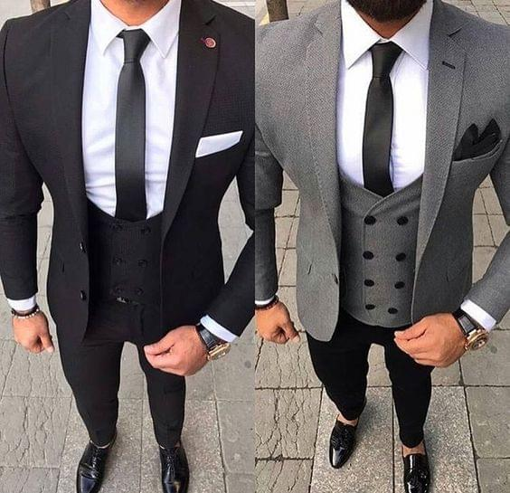

Як правильно підібраний одяг впливає на самопочуття?
Якщо ви вдягаєтесь як стажер, вас будуть сприймати як стажера і навколишні, і навіть ви самі. Розповідаємо, яке рішення пропонують психологи моди, щоб змусити вашу одяг працювати на вас.
Золоте правило Дональда Трампа «одягатися слід для тієї роботи, яку ви хочете мати, а не для тієї, яку маєте» - це, мабуть, одне з тих висловлювань, де 45-й президент дійсно знає, про що говорить.
Про те, як правильно підібраний аутфіт може вплинути на наш настрій, самовідчуття і впевненість в собі, проведено чимало досліджень. Одне з останніх, проте, дає застереження: оцінка вашого образу повинна виходити, перш за все, від вас. Хороший наряд може вважатися дійсно таким, якщо ви і справді добре в ньому себе відчуваєте. «Всі люди різні, і міра успіху у всіх - теж різна», - коментує професор психології моди Лондонського коледжу моди Каролін Майер. Так що цілком може статися так, що чудово скроєний дорогий наряд просто почне вас сковувати, і ні про яку впевненості в собі не буде й мови.
Більш того, тут за або проти вас може спрацювати і ще один фактор - обстановка. Наприклад, костюм-трійка - такий собі символ успіху ділової людини - може цілком допомогти вам почувати себе впевненіше, якщо вам належить бізнес-презентація перед фахівцями вище вас за посадою. Тим часом, надіньте такий аутфіт на нараду команди, яка запускає техно-стартап, в який-небудь лофт (де все навколо носять худі і джинси), - і конфуз забезпечений.
Експеримент
У психології цей ефект носить назву «enclothed cognition». На українську мову цей термін ще не перекладений, але суть його полягає в тому, що наші здібності (cognition) безпосередньо залежать від того, у що ми одягнені (enclothed). Професор менеджменту та адміністративного управління Адам Галінськи (Adam Galinsky) з Колумбійської школи бізнесу стверджує, що для того, щоб ефект від того чи іншого способу набрав свою позитивну дію, людині необхідно надати своєму одягу якесь символічне значення.
Саме професор Галінськи з колегами провів перше тестування цієї гіпотези в 2012 році. Експеримент полягав в наступному: двом групам студентів дали однакові тести на перевірку їх інтелектуальних здібностей. Однією з них вчені видали лабораторні халати, тоді як інший - просто дозволили вирішувати завдання в своїй звичній одязі. Результати показали, що група, одягнена в халати, впоралася із завданнями набагато краще другої.
Але і на цьому експеримент не закінчився. Потім білі халати видали обом групам. Першій групі сказали, що їх одяг належить вченим, другій ж - пояснили, що їх халати належать художникам. І знову результати показали, що студенти у «вчених» халатах виконали тест швидше і якісніше.
Сенс експерименту, підсумував професор Галінськи, полягав в тому, щоб показати, що одяг дійсно впливає на те, як ми мислимо і як функціонуємо в соціумі - але тільки за тієї умови, що ми вірно інтерпретуємо її символічне значення. В кінцевому підсумку, у студентів на підсвідомому рівні спрацювала установка, що вчений з тестом на інтелект впорається краще художника. Правильно підібраний одяг в цьому випадку просто допоміг закріпити цей шаблон.
Перекладаючи кальку експерименту Галінськи на наше вічний питання «що вдягнути?», Отримуємо наступне: неважливо, наскільки модний і дорогий у вас аутфіт, головне - це внутрішнє відчуття того, що ваш look дійсно підходить вам і тій ситуації, в якій ви опинилися в конкретний момент.
Як це застосувати на себе? На сьогоднішній день, існує як мінімум 9 кроків на цьому шляху
1. Звіртеся із собою
«Вранці, перш ніж відкрити шафу, подумайте про те, що вам потрібно сьогодні зробити», - пропонує Донн Карен, психолог моди з нью-йоркського Технологічного інституту моди. В якому ви настрої? Як ви хочете, щоб вас сприймали оточуючі? Якщо ви відчуваєте втому та апатію, то, можливо, вам навіть буде корисно трохи причепуритися. З іншого боку, щоб злегка послабити тягар напруги перед майбутнім робочим днем, можна піти в стиль casual.
«Мова йде про постановку певного балансу між нашим настроєм, одягом і тим, як ми хочемо виглядати перед іншими», - продовжує пані Карен. Всім нам деколи приходять думки на кшталт «Як же хочеться скоріше зняти з себе цей костюм», але цього легко можна уникнути, давши собі з ранку хвилинку для самоаналізу.
2. Подумайте про комфорт
І мова не про те, що треба виходити з дому в улюбленій розтягнутої кофті і треніках. Подумайте про тканину - вона повинна бути максимально приємною для шкіри. Подумайте і про те, наскільки ваш аутфіт корелює з обстановкою, в якій ви сьогодні опинитеся.
«Відчувати комфорт - це дуже важливо. Адже, врешті-решт, ваша мета - виконати план на день, а не думати постійно про те, у що ви сьогодні одягнені », - вважає Донн Карен. Зверніть увагу на свої улюблені кольори (за умови, що вони дійсно вам йдуть), фасони, бренди і будуйте свій базовий гардероб на тих речах, які ви вже точно будете носити.
3. Носіть одяг, який на вас добре сидить
Пункт очевидний, але все ж не менш важливий. Бездоганний костюм, який, однак, не підходить вам за розміром, - це вже не бездоганний костюм. Якісний крій і вдалий розмір - це те, що допоможе вам відчути впевненість в собі (читайте також: Візуальні ілюзії в одязі: як виглядати на пару розмірів стрункішою)
4. Виділяйтесь правильно
Маленьке чорне плаття - це завжди вдалий вибір, коли ви йдете на коктейль, але все ж в ньому ризик злитися з натовпом зростає в рази. Іноді потрібно виділятися - в хорошому сенсі цього слова. Наприклад, якщо ви проходите співбесіду на роботу, дуже важливо, щоб вас запам'ятали. Так що не бійтеся надіти яскраву річ або цікавий фасон - звичайно ж, за умови, що конкретно в цьому кольорі або в цьому фасоні ви відчуваєте себе впевнено.
Ось ще один експеримент для натхнення. На сьогоднішній день вченими встановлено: люди, що носять червоний, завжди відчувають себе впевненіше інших. Під час одного з тестувань, наприклад, одній групі людей пропонувалося сформулювати свої враження щодо іншої групи. Як можна здогадатися, деякі члени останньої були одягнені в червоний. Тим часом, вся сіль експерименту полягала в тому, що перша група не бачила, який одяг носить друга, оцінюючи тільки їх обличчя і манеру тримати себе. Так ось люди, в чиєму образі були речі червоного кольору, були оцінені як більш впевнені й привабливі.
- Комусь така стратегія здасться досить корисною, адже, остаточно вичерпавши свій ідеальний аутфіт, ви виключаєте можливість помилки.
- З іншого боку, ми вже передбачаємо «фе» від завзятих fashionistas. Що ж, в цьому випадку можна хоча б заздалегідь продумати для себе кілька базових шаблонів, в який цілком допускаються модні варіації.
- Комусь така стратегія здасться досить корисною, адже, остаточно вичерпавши свій ідеальний аутфіт, ви виключаєте можливість помилки.
- З іншого боку, ми вже передбачаємо «фе» від завзятих fashionistas. Що ж, в цьому випадку можна хоча б заздалегідь продумати для себе кілька базових шаблонів, в який цілком допускаються модні варіації.